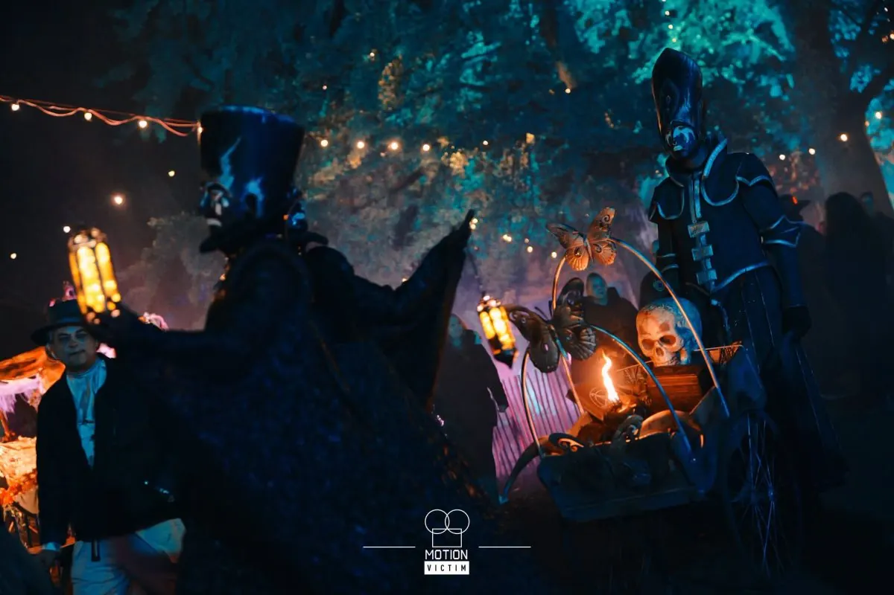

Evenement
Halloween festival
- Wanneerzaterdag 31 oktober t/m zondag 1 november 2026
- WaarKloster Graefenthal
Maasstraße 48, 47574 Goch, Deutschland Route

Het Halloween Festival NRW 2026 wacht op jullie terugkeer…
Na de duistere middeleeuwen, de vervloekte piratenwereld en het verdraaide sprookjesrijk voert jullie volgende reis verder terug in de tijd dan ooit tevoren…
Diep onder vergeten tempels en oude grafkamers ontwaken de geheimen van lang verloren beschavingen. De Maya’s, de Azteken en het oude Egypte lieten meer achter dan alleen ruïnes… Ze lieten vloeken, rituelen en duistere krachten achter die nooit gewekt hadden mogen worden.
Op vijf grote dancefloors wachten jullie de beste sounds: van Party-Ballermann en 80’s & 90’s hits tot Electro-House, Latin en de nieuwste charts. Samen met duizenden andere feestgangers worden jullie onderdeel van een nacht vol spanning, magie en onvergetelijke momenten.
Terwijl onze shuttlebusservice jullie elk half uur comfortabel tussen Goch en Kleve vervoert, zorgen onder andere het angstaanjagende griezellabyrint en mysterieuze walking acts voor echte kippenvelmomenten. 😱🔥
Natuurlijk ontbreekt ook alles eromheen niet: van een photobooth, professionele fotografen en een epische aftermovie tot indrukwekkend uitgewerkte decoratie, heerlijke foodstands, een cocktailbar en een relaxte lounge area.
Maar nog niet alle geheimen zijn onthuld… sommige verrassingen ontwaken pas wanneer de duisternis valt. 🎭
De poorten openen zich opnieuw. Het verleden ontwaakt.
Trek je Halloweenkostuum aan en word onderdeel van een onvergetelijke nacht!
Openingstijden
Zaterdag 31 oktober 2026: 20.30 – 03.00 uur
Tickets
Standaardticket € 24,50 p.p.
Shuttlebus heenreis € 5,00
Shuttlebus terugreis € 5,00
Shuttlebus heenreis
20:30 uur Kleve Bhf – 20:50 Goch Bhf – 21:00 Graefenthal
21.00 uur Kleve Bhf – 21.20 Goch Bhf – 21.30 Graefenthal
21.30 uur Kleve Bhf – 21.50 Goch Bhf – 22.00 Graefenthal
22.00 uur Kleve Bhf – 22.20 Goch Bhf – 22.30 Graefenthal
22:30 uur Kleve Bhf – 20:50 Goch Bhf – 23:00 Graefenthal
Shuttlebus terugreis
01:30 Uhr Graefenthal – 01:40 Goch Bhf – 02:00 Kleve Bhf
02:00 Uhr Graefenthal – 02:10 Goch Bhf – 02:30 Kleve Bhf
02:30 Uhr Graefenthal – 02:40 Goch Bhf – 03:00 Kleve Bhf
03:00 Uhr Graefenthal – 03:10 Goch Bhf – 03:30 Kleve Bhf
03:30 Uhr Graefenthal – 03:40 Goch Bhf – 04:00 Kleve Bhf
Meer evenementen bij Kloster Graefenthal
Binnenkort in Nijmegen
 UitgelichtSean Taylor24 okt, 20.00 uurDe Brauerij
25okt
UitgelichtSean Taylor24 okt, 20.00 uurDe Brauerij
25okt UitgelichtHighlight Tours in het Vrijheidsmuseum25 okt, 14.00 uurVrijheidsmuseum
25okt
UitgelichtHighlight Tours in het Vrijheidsmuseum25 okt, 14.00 uurVrijheidsmuseum
25okt Uitwisselingsconcert Harmonie Hatert met DOV Wijchen25 okt, 13.00 uur
27okt
Uitwisselingsconcert Harmonie Hatert met DOV Wijchen25 okt, 13.00 uur
27okt Filmvertoning: Het land van mijn ouders27 okt, 19.00 uurHuis van de Nijmeegse Geschiedenis
Filmvertoning: Het land van mijn ouders27 okt, 19.00 uurHuis van de Nijmeegse Geschiedenis